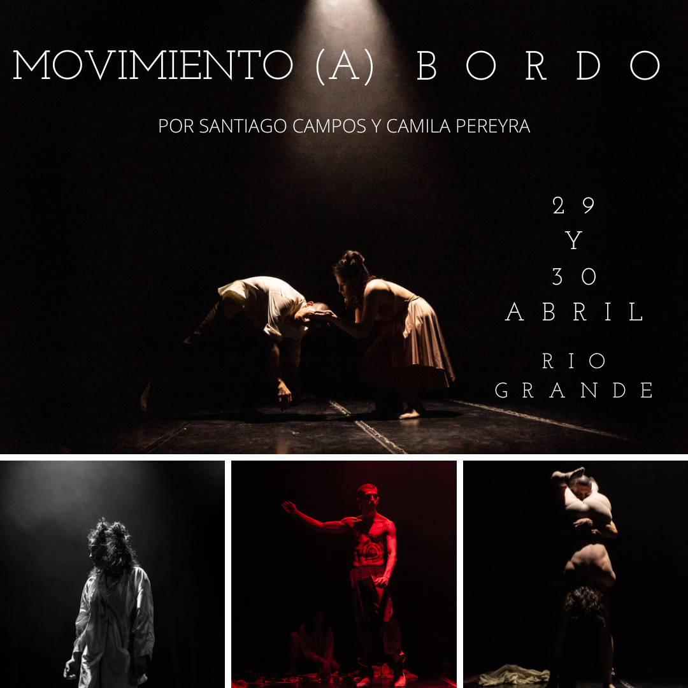
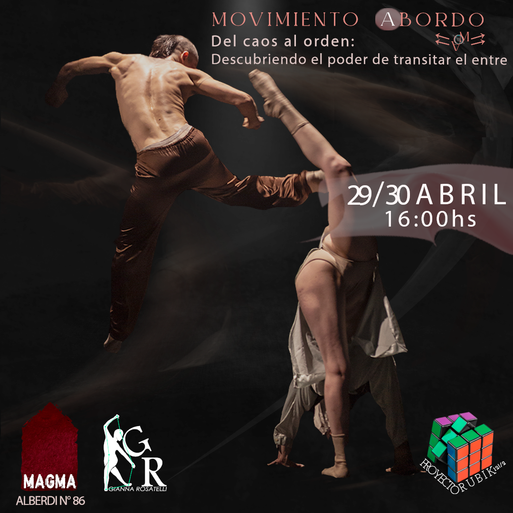

CLASES Y SEMINARIOS 2023
MOVIMIENTO A BORDO Vol1
En la danza, la transición de un movimiento a otro puede ser vista como una metáfora de la transición de la vida misma. En lugar de buscar la estabilidad absoluta, podemos aprender a encontrar nuestra armonía en el espacio entre lo que una vez fue y lo que será. Transitar el entre en la danza es una habilidad que requiere tanto confianza como vulnerabilidad, y nos permite explorar la complejidad del movimiento y de nuestras emociones. Al hacerlo, podemos descubrir que el caos y el orden no son polos opuestos, sino que son estados en constante evolución, mutuamente dependientes e inseparables. Al practicar transitar el entre en la danza, podemos aprender a aceptar y abrazar la incertidumbre y el cambio en nuestras vidas, encontrando así una mayor libertad y creatividad en nuestro movimiento y en nuestro ser.
MOVIMIENTO A BORDO Vol2
El encuentro de danza que se llevó a cabo recientemente fue una experiencia verdaderamente transformadora. Al bailar juntos, pudimos explorar la belleza y la complejidad de los movimientos y las emociones, y descubrir cómo pueden reflejar y afectar nuestras vidas. En lugar de buscar la perfección o la estabilidad absoluta, nos permitimos transitar el entre, encontrando la armonía en el espacio entre lo que fue y lo que será. Al hacerlo, aprendimos a confiar en nosotros mismos y en nuestros compañeros de danza, permitiéndonos ser vulnerables y abiertos a la improvisación y la experimentación. Descubrimos que el caos y el orden no son opuestos, sino que son estados en constante evolución y cambio, y que pueden coexistir en armonía. Esta experiencia en la danza nos enseñó a aceptar y abrazar la incertidumbre y el cambio en nuestras vidas, y a encontrar la libertad y la creatividad en nuestro movimiento y en nuestro ser. A medida que seguimos practicando transitar el entre en la danza y en nuestras vidas diarias, podemos seguir creciendo y explorando, descubriendo nuevos aspectos de nosotros mismos y de nuestro mundo.